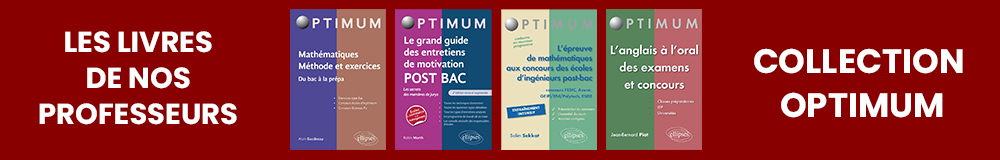

Les Ecoles d’Ingénieurs accessibles après le Bac sont devenus depuis plusieurs années des écoles très attractives pour les candidats.
Cela s’explique par plusieurs éléments.
Tout d’abord cela correspond à un attrait grandissant pour le métier d’ingénieur et sa fonction qui ne se résume pas à son rôle dans les seuls systèmes de production. Les compartiments que l’on opérait et que l’on constatait il y encore quelques années entre la technique et les sciences d’un côté, le commerce, le management et la stratégie d’entreprise de l’autres appartiennent désormais au passé. L’ingénieur est aujourd’hui au carrefour de plusieurs compétences majeures : la technique et l’innovation bien entendu mais également la gestion de projet, la stratégie et la gestion des hommes.
Parfaitement au fait de ces changements, une soixantaine d’Ecoles d’Ingénieurs recrutant au niveau du baccalauréat ouvrent tous les ans près de 5000 places pour des élèves intéressés pas le métier d’ingénieur mais pas par la perspective d’y arriver en passant par le schéma de deux ou trois années de classes préparatoires.
Pour autant, les formations et les enseignements proposés par les Ecoles d’Ingénieurs post-bac sont loin d’être des Plan B destinés aux élèves scientifiques de moins bons niveaux.
Certaines de ces Ecoles se sont regroupées pour proposer des concours communs. Ils sont principalement quatre.
Le Concours ADVANCE
Regroupe 4 Ecoles : EPITA, ESME Sudria, IPSA et SupBiotech. Ce concours offre près de 1 500 places aux bacheliers de l’année et recrute sur la base d’épreuves orales et écrites : Mathématiques, Physique, Chimie – Biologie
Le Concours AVENIR
Regroupe 8 Ecoles : ESILV, ECE, EPF, ESTI, ESTIC, ESIGELEC, ESTACA, EIGSI. Ce concours offre plus de 2 000 places aux bacheliers de l’année, il repose principalement sur des épreuves écrites sous forme de QCM : Mathématiques, Physique, Anglais, Français.
Le Concours GEIPI POLYTECH
Regroupe 34 Ecoles parmi lesquelles figurent : ISAT, Polytech Clermont-Ferrand, ISEL, ENIB, ENSIM, EEIGM, ESIREM. Ce concours offre plus de 3 300 places aux bacheliers de l’année, un entretien de motivation précède les examens écrits : Mathématiques, Physique-Chimie.
Le Concours PUISSANCE ALPHA
Regroupe 16 Ecoles parmi lesquelles figurent : ESIEE Paris, 3Il, ESEO, HEI, Escom, CPE Lyon. Ce concours offre 4 500 places aux bacheliers de l’année et recrute selon des épreuves écrites et orales. Les épreuves écrites se présentent sous forme de QCM : Mathématiques, Physique, Chimie – Biologie, Personnalité et motivation.